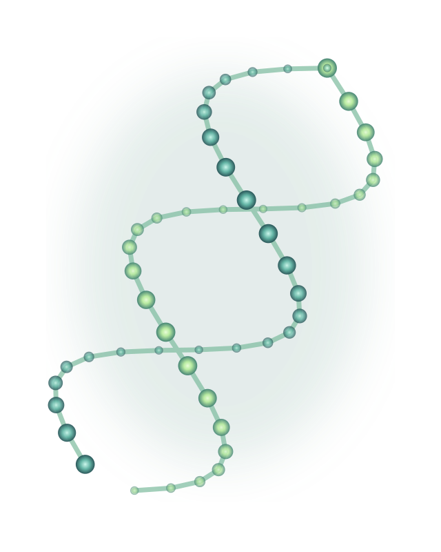

CIENCIA QUE TRANSFORMA LA SALUD
La medicina
del futuro empieza
en la biología.
Una mirada a los avances de la biotecnología, la medicina personalizada y los desafíos de una innovación más humana.
BIOTECNOLOGÍA MÉDICACONOCIMIENTO · ÉTICA · SALUD
EXPLORACIÓN MOLECULAR

DE LA BIOLOGÍA A LA MEDICINA
Pequeñas estructuras.
Grandes posibilidades.
Organismos vivosProcesos biológicosMedicamentos innovadoresSalud humana
UNA INVESTIGACIÓN, DISTINTAS PERSPECTIVAS
Comprender el avance.
Mirar más allá.
Recorre los fundamentos, los hallazgos y las implicaciones de la biotecnología en la medicina.
01
La base científica
Organismos vivos y procesos biológicos al servicio de soluciones médicas.
MARCO TEÓRICO02
Los avances
Medicamentos innovadores y terapias específicas para necesidades particulares.
RESULTADOS03
La dimensión humana
Calidad de vida, responsabilidad y un marco ético para la innovación.
IMPACTOSINNOVACIÓN CON PROPÓSITO
EL CENTRO DE LA INVESTIGACIÓN
Más posibilidades.
Más responsabilidad.
Los avances tecnológicos redefinen la práctica clínica y, al mismo tiempo, plantean la necesidad de un marco regulatorio y ético sólido.
Explorar los impactos